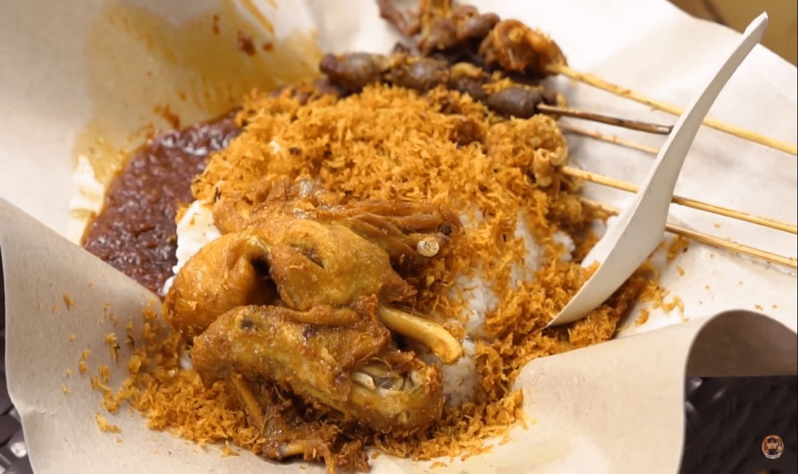

RM Ayam Goreng Santa Maria
RM Ayam Goreng Santa Maria adalah rumah makan pinggir jalan yang terletak di depan sekolah SMP Santa Maria di Cirebon. Rumah makan ini menyediakan menu goreng-gorengan seperti ayam goreng, serta aneka sate goreng seperti sate ati, sate usus, sate kulit, dan lainnya. Menu favorit di rumah makan ini adalah sate usus dan sate kulit.
Informasi Restoran:
Alamat: Jl. Sisingamangaraja No.31, Panjunan, Kec. Lemahwungkuk, Kota Cirebon, Jawa Barat 45112
Jam buka: Senin – Sabtu, jam 08:00 – 16:00 WIB
Google Maps: